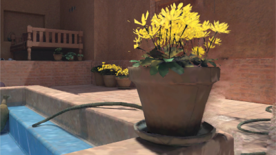
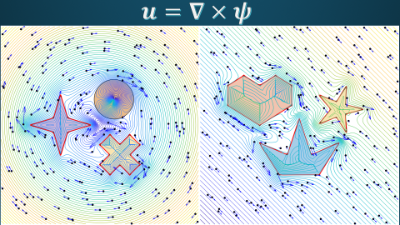

Important Dates
- Paper submission deadline:21 December, 2022
- Paper notifications:21 February, 2023
- Revision deadline:15 March, 2023
- Camera-ready deadline:5 April, 2023
- Poster submission deadline:24 March, 2023
- Extended Poster submission deadline:30 March, 2023
- Poster notifications:3 April, 2023
- Early registration deadline:5 April, 2023
- Conference:3-5 May, 2023
Paper Presentations
Links to the published papers in the journal will be published soon.
Over the past three decades, the ACM SIGGRAPH Symposium on Interactive 3D Graphics and Games has showcased exceptional progress from academic and industrial research covering all aspects of interactive computer graphics.
This year, we continue a track record of excellence with 16 high-quality papers selected by the international paper committee for publication and presentation at the conference.
Conference papers will appear in PACM CGIT after the conference. We have requested authors to provide preprint links as possible until then. Refresh this page periodically, or use a web page monitoring tool, to check this page for updates.
Invited papers
The program also includes 3 papers originally published in the Journal of Computer Graphics Techniques (JCGT) and 1 paper from the IEEE Transactions on Visualization and Computer Graphics (TVCG).
Papers 1: Neural Rendering and Image Warping
Session chair: Anton Kaplanyan, Intel
 Video presentations
Video presentations
- NeRFshop: Interactive Editing of Neural Radiance Fields
- Clément Jambon, Bernhard Kerbl, Georgios Kopanas, Stavros Diolatzis, Thomas Leimkuehler and George Drettakis
- preprint
-
Abstract
Neural Radiance Fields (NeRFs) have revolutionized novel view synthesis for captured scenes, with recent methods allowing interactive free-viewpoint navigation and fast training for scene reconstruction. However, the implicit representations used by these methods — often including neural networks and complex encodings — make them difficult to edit. Some initial methods have been proposed, but they suffer from limited editing capabilities and/or from a lack of interactivity, and are thus unsuitable for interactive editing of captured scenes. We tackle both limitations and introduce NeRFshop, a novel end-to-end method that allows users to interactively select and deform objects through cage-based transformations. NeRFshop provides fine scribble-based user control for the selection of regions or objects to edit, semi-automatic cage creation, and interactive volumetric manipulation of scene content thanks to our GPU-friendly two-level interpolation scheme. Further, we introduce a preliminary approach that reduces potential resulting artifacts of these transformations with a volumetric membrane interpolation technique inspired by Poisson image editing and provide a process that distills the edits into a standalone NeRF representation.
- NeRFahedron: A Primitive for Animatable Neural Rendering with Interactive Speed
- Zackary P. T. Sin, Peter H. F. Ng and Hong Va Leong
- preprint
-
Abstract
Neural rendering is an exciting topic injecting machine learning methodologies into the classical computer graphics rendering pipeline. Although recent works have achieved remarkable fidelity, discussion on how to enable it for interactive scenarios like video games seems to be lacking. Aside from an editable 3D model and UV-mapping, an interactive application will demand the neural rendering to handle animatable 3D content with interactive speed. This is currently a gap in neural rendering and our solution to this problem is a novel neural rendering pipeline involving a primitive named NeRFahedron. It localizes a NeRF field and as such effectively reduces the number of expensive network sampling operations to improve speed. Our pipeline involves tetrahedron rasterization, localized ray marching and near-surface particle sampling. The result is a method that can enable animatable content for neural rendering with interactive speed, which has been shown to be competitive in rendering animation. We will also showcase its ability to enable interactive applications via a real-time demo.
- Metameric Inpainting for Image Warping
- Rafael Kuffner dos Anjos, David Walton, Kaan Aksit, Sebastian Friston, David Swapp, Anthony Steed and Tobias Ritschel
- (invited TVCG paper presentation) link, preprint
-
Abstract
Image-warping, a per-pixel deformation of one image into another, is an essential component in immersive visual experiences such as virtual reality or augmented reality. The primary issue with image warping is disocclusions, where occluded (and hence unknown) parts of the input image would be required to compose the output image. We introduce a new image warping method, Metameric image inpainting - an approach for hole-filling in real-time with foundations in human visual perception. Our method estimates image feature statistics of disoccluded regions from their neighbours. These statistics are inpainted and used to synthesise visuals in real-time that are less noticeable to study participants, particularly in peripheral vision. Our method offers speed improvements over the standard structured image inpainting methods while improving realism over colour-based inpainting such as push-pull. Hence, our work paves the way towards future applications such as depth image-based rendering, 6-DoF 360 rendering, and remote render-streaming.

Papers 2: Rendering and Sampling
Session chair: Michal Iwanicki, Activision
 Video presentations
Video presentations
- Efficient Rendering for Light Field Displays using Tailored Projective Mappings
- Laura Fink, Svenja Strobel, Linus Franke and Marc Stamminger
- preprint
-
Abstract
A standard paradigm when rendering for parallax-based light field displays is to render multiple, slightly offset views first and to interweave these afterwards. In practice, more than 40 views of preferably high resolution need to be rendered per frame to achieve acceptable visual quality. The total amount of rendered pixels may consequently exceed the native resolution of the display by far. Increased memory consumption and sub-optimal render times are direct consequences.
In this paper, we examine where pixels are “wasted” and present novel projective mappings for the virtual camera system that are custom tailored to such displays. Thus, we alleviate the aforementioned issues and show significant performance improvements regarding render time and memory consumption, while having only minor impact on visual quality. As we mainly touch the projective mapping of the virtual camera, our method is lean and can easily be integrated in existing rendering pipelines with minimal side effects.

- Barycentric Quad Rasterization
- Jules Bloomenthal
- (invited JCGT paper presentation) link, preprint
-
Abstract
When a quadrilateral is rendered as two triangles, a C1 discontinuity can occur along the dividing diagonal. In 2004, Hormann and Tarini used generalized barycentric coordinates to eliminate the discontinuity. The present paper provides an implementation using a geometry shader, unavailable in 2004, and provides additional examples of the barycentric technique.
- Efficient Spatial Resampling Using the PDF Similarity
- Yusuke Tokuyoshi
- preprint
-
Abstract
In real-time rendering, spatiotemporal reservoir resampling (ReSTIR) is a powerful technique to increase the number of candidate samples for resampled importance sampling. However, reusing spatiotemporal samples is not always efficient when target PDFs for the reused samples are dissimilar to the integrand. Target PDFs are often spatially different for highly detailed scenes due to geometry edges, normal maps, spatially varying materials, and shadow edges. This paper introduces a new method of rejecting spatial reuse based on the similarity of PDF shapes for single-bounce path connections (e.g., direct illumination). While existing rejection methods for ReSTIR do not support arbitrary materials and shadow edges, our PDF similarity takes them into account because target PDFs include BSDFs and shadows. In this paper, we present a rough estimation of PDF shapes using von Mises–Fisher distributions and temporal resampling. We also present a stable combination of our rejection method and the existing rejection method, considering estimation errors due to temporal disocclusions and moving light sources. This combination efficiently reduces the error around shadow edges with temporal continuities. By using our method for a ReSTIR variant that reuses shadow ray visibility for the integrand, we can reduce the number of shadow rays while preserving shadow edges.
Papers 3: Points and Manipulation
Session chair: Chris Wyman, NVIDIA
 Video presentations
Video presentations
- Eye-Based Point Rendering for Dynamic Multiview Effects
- Ajinkya Gavane and Benjamin Watson
- preprint
-
Abstract
Eye-based point rendering (EPR) can make multiview effects much more practical by adding eye (camera) buffer resolution efficiencies to improved view-independent rendering (iVIR). We demonstrate this very successfully by applying EPR to dynamic cube-mapped reflections, sometimes achieving nearly 7√ó speedups over iVIR and traditional multiview rendering (MVR), with nearly equivalent quality. Our application to omnidirectional soft shad- ows is less successful, demonstrating that EPR is most effective with larger shader loads and tight eye buffer to off-screen (render target) buffer map- pings. This is due to EPR‚Äôs eye buffer resolution constraints limiting points and shading calculations to the sampling rate of the eye‚Äôs viewport. In a 2.48 million triangle scene with 50 reflective objects (using 300 off-screen views), EPR renders environment maps with a 49.40ùëöùë† average frame time on an NVIDIA 1080 Ti GPU. In doing so, EPR generates up to 5√ó fewer points than iVIR, and regularly performs 50√ó fewer shading calculations than MVR.
- Unpaired Translation of 3D Point Clouds with Multi-part Shape Representation
- Chih-Chia Li and I-Chen Lin
- preprint
-
Abstract
Unpaired shape translation is an emerging task for intelligent shape modelling and editing. Recent methods for 3D shape transfer use single- or multi-scale latent codes but a single generator to generate the whole shape. The transferred shapes are prone to lose control of local details. To tackle the issue, we propose a parts-to-whole framework that employs multi-part shape representation to preserve structural details during translation. We decompose the whole shape feature into multiple part features in the latent space. These part features are then processed by individual generators respectively and transformed to point clouds. We constrain the local features of parts within the loss functions, which enable the model to generate more similar shape characteristics to the source input. Furthermore, we propose a part aggregation module that improves the performance when combining multiple point clusters to generate the final output. The experiments demonstrate that our multi-part shape representation can retain more shape characteristics compared to previous approaches.
- ManiLoco: A VR-Based Locomotion Method for Concurrent Object Manipulation
- Dayu Wan, Xiaolei Guo, Jiahui Dong, Christos Mousas and Yingjie Chen
- preprint
-
Abstract
The use of virtual reality (VR) in laboratory skill training is rapidly increasing. In such applications, users often need to explore a large virtual environment within a limited physical space while completing a series of hand-based tasks (e.g., object manipulation). However, the most widely used controller-based teleport methods may conflict with the users’ hand operation and result in a higher cognitive load, negatively affecting their training experiences. To alleviate these limitations, we designed and implemented a locomotion method called ManiLoco to enable hands-free interaction and thus avoid conflicts and interruptions from other tasks. Users can teleport to a remote object’s position by taking a step toward the object while looking at it. We evaluated ManiLoco and compared it with state-of-the-art Point & Teleport in a within-subject experiment with 16 participants. The results confirmed the viability of our foot- and head-based approach and better support concurrent object manipulation in VR training tasks. Furthermore, our locomotion method does not require any additional hardware. It solely relies on the VR head-mounted display (HMD) and our implementation of detecting the user’s stepping activity, and it can be easily applied to any VR application as a plugin.
Papers 4: Ray Tracing
Session chair: Pete Shirley, Activision
 Video presentations
Video presentations
- Subspace Culling for Ray-Box Intersection
- Atsushi Yoshimura and Takahiro Harada
- preprint
-
Abstract
Ray tracing is an essential operation for realistic image synthesis. The acceleration of ray tracing has been studied for a long period of time because algorithms such as light transport simulations require a large amount of ray tracing. One of the major approaches to accelerate the intersections is to use bounding volumes for early pruning for primitives in the volume. The axis-aligned bounding box is a popular bounding volume for ray tracing because of its simplicity and efficiency. However, the conservative bounding volume may produce extra empty space in addition to its content. Especially, primitives that are thin and diagonal to the axis give false-positive hits on the box volume due to the extra space. Although more complex bounding volumes such as oriented bounding boxes may reduce more false-positive, they are computationally expensive. In this paper, we propose a novel culling approach to reduce false-positive hits for the bounding box by embedding a binary voxel data structure to the volume. As a ray is represented as a conservative voxel volume as well in our approach, the ray–voxel intersection is cheaply done by bitwise AND operations. Our method is applicable to hierarchical data structures such as bounding volume hierarchy (BVH). It reduces false-positive hits due to ray–box test and reduces the number of intersections during the traversal of BVH in ray tracing. We evaluate the reduction of intersections with several scenes and show the possibility of performance improvement by paying off the culling overhead. We also introduce a compression approach with a lookup table for our voxel data. We show our compressed voxel data archives significant false-positive reductions with a small amount of memory.
- Performance Comparison of Bounding Volume Hierarchies for GPU Ray Tracing
- Daniel Meister and Jiří Bittner
- (invited JCGT paper presentation) link, preprint
-
Abstract
Ray tracing is an inherent component of modern rendering algorithms. The bounding volume hierarchy (BVH) is a commonly used acceleration data structure employed in most ray tracing frameworks. Through the last decade, many methods addressing ray tracing with bounding volume hierarchies have been proposed. However, most of these methods were typically compared to only one or two reference methods. The acceleration provided by a particular BVH depends heavily on its construction algorithm. Even experts in the field dispute which method is the best. To add more insight into this challenge, we empirically compare the most popular methods addressing BVHs in the context of GPU ray tracing. Moreover, we combine the construction algorithms with other enhancements such as spatial splits, ray reordering, and wide BVHs. To estimate how close we are from the best performing BVH, we propose a novel method using global optimization with simulated annealing and combine it with the existing best-performing BVH builders. For the sake of fairness and consistency, all methods are evaluated in a single unified framework, and we make all source code publicly available. We also study the correlation between tracing times and the estimated traversal cost induced by the surface area heuristic (SAH).
- Accelerated Photon Mapping for Hardware-based Ray Tracing
- René Kern, Felix Brüll and Thorsten Grosch
- (invited JCGT paper presentation) link, preprint
-
Abstract
Photon mapping is a numerical solution to the rendering equation based on tracing random rays. It works by first tracing the paths of the emitted light (photons) and storing them in a data structure to then collect them later from the perspective of the camera. Especially, the collection step is difficult to realize on the GPU due to its sequential nature. We present an implementation of a progressive photon mapper for ray tracing hardware (RTPM) based on a combination of existing techniques. Additionally, we present two small novel techniques that speed up RTPM even further by reducing the number of photons stored and evaluated. We demonstrate that RTPM outperforms existing hash-based photon mappers, especially on large and complex scenes.
- Importance-Based Ray Strategies for Dynamic Diffuse Global Illumination
- Zihao Liu, Jing Huang, Allan Rocha, Jim Malmros and Jerry Zhang
- preprint
-
Abstract
In this paper, we propose a first and efficient ray allocation technique for Dynamic Diffuse Global Illumination (DDGI) using Multiple Importance Sampling (MIS). Our technique, IS-DDGI, extends DDGI by incorporating a set of importance-based ray strategies that analyze, allocate, and manage ray resources on the GPU. We combine these strategies with an adaptive historical and temporal frame-to-frame analysis for an effective reuse of information and a set of GPU-based optimizations for speeding up ray allocation and reducing memory bandwidth. Our IS-DDGI achieves similar visual quality to DDGI with a speedup of 1.27x to 2.47x in total DDGI time and 3.29x to 6.64x in probes ray tracing time over previous technique [29]. Most speedup of IS-DDGI comes from probes ray tracing speedup.

Papers 5: Neural Denoising and Motion
Session chair: Christoph Schied, NVIDIA
 Video presentations
Video presentations
- Joint Neural Denoising of Surfaces and Volumes
- Nikolai Hofmann, Jon Hasselgren and Jacob Munkberg
- preprint
-
Abstract
Denoisers designed for surface geometry rely on noise-free feature guides for high quality results. However, these guides are not readily available for volumes. Our method enables combined volume and surface denoising in real time from low sample count (4 spp) renderings. The rendered image is decomposed into volume and surface layers, leveraging spatio-temporal neural denoisers for both components. The individual signals are composited using learned weights and denoised transmittance. Our architecture outperforms current denoisers in scenes containing both surfaces and volumes, and produces temporally stable results at interactive rates.
- Pixel-wise Guidance for Utilizing Auxiliary Features in Monte Carlo Denoising
- Kyu Beom Han, Olivia Odenthal, Woo Jae Kim and Sung-Eui Yoon
- preprint
-
Abstract
Auxiliary features such as geometric buffers (G-buffers) and path descriptors (P-buffers) have been shown to significantly improve Monte Carlo (MC) denoising. However, recent approaches implicitly learn to exploit auxiliary features for denoising, which could lead to insufficient utilization of each type of auxiliary features. To overcome such an issue, we propose a denoising framework that relies on an explicit pixel-wise guidance for utilizing auxiliary features. First, we train two denoisers, each trained by a different auxiliary feature (i.e., G-buffers or P-buffers). Then we design our ensembling network to obtain per-pixel ensembling weight maps, which represent pixel-wise guidance for which auxiliary feature should be dominant at reconstructing each individual pixel and use them to ensemble the two denoised results of our denosiers. We also propagate our pixel- wise guidance to the denoisers by jointly training the denoisers and the ensembling network, further guiding the denoisers to focus on regions where G-buffers or P-buffers are relatively important for denoising. Our result and show considerable improvement in denoising performance compared to the baseline denoising model using both G-buffers and P-buffers. The source code is available at https://github.com/qbhan/GuidanceMCDenoising.

- An Interactive Framework for Visually Realistic 3D Motion Synthesis using Evolutionarily-trained Spiking Neural Networks
- Ioannis Polykretis, Aditi Patil, Mridul Aanjaneya and Konstantinos Michmizos
- preprint
-
Abstract
We present an end-to-end method for capturing the dynamics of 3D human characters and translating them for synthesizing new, visually-realistic motion sequences. Conventional methods employ sophisticated, but generic, control approaches for driving the joints of articulated characters, paying little attention to the distinct dynamics of human joint movements. In contrast, our approach attempts to synthesize human-like joint movements by exploiting a biologically-plausible, compact network of spiking neurons that drive joint control in primates and rodents. We adapt the controller architecture by introducing learnable components and propose an evolutionary algorithm for training the spiking neural network architectures and capturing diverse joint dynamics. Our method requires only a few samples for capturing the dynamic properties of a joint’s motion and exploits the biologically-inspired, trained controller for its reconstruction. More importantly, it can transfer the captured dynamics to new visually-plausible motion sequences. To enable user-dependent tailoring of the resulting motion sequences, we develop an interactive framework that allows for editing and real-time visualization of the controlled 3D character. We also demonstrate the applicability of our method to real human motion capture data by learning the hand joint dynamics from a gesture dataset and using our framework to reconstruct the gestures with our 3D animated character. The compact architecture of our joint controller emerging from its biologically-realistic design, and the inherent capacity of our evolutionary learning algorithm for parallelization, suggest that our approach could provide an efficient and scalable alternative for synthesizing 3D character animations with diverse and visually-realistic motion dynamics.
Papers 6: Dynamics
Session chair: Omer Shapira, NVIDIA
 Video presentations
Video presentations
- G2 Blending Ball B-Spline Curve by B-Spline
- Yuming Zhao, Zhongke Wu and Xingce Wang
- preprint
-
Abstract
Blending two Ball B-Spline Curves(BBSC) is an important tool in modeling tubular objects. In this paper, we propose a new BBSC blending method. Our method has the following three main contributions: First, we use BBSC instead of ball Bézier to model the blending part to expand the solution space and make the resultant BBSC have better fairness. Second, we consider both the skeleton line and radius of BBSC, which makes the skeleton line and radius consistent. Thirdly, we propose a two-step optimization process to solve the problem of excessive amount of parameters brought by expanding the solution space, so that our method satisfies the real-time.
- Fast Position-based Multi-Agent Group Dynamics
- Tomer Weiss
- preprint
-
Abstract
We present a novel method for simulating groups moving in formation. Recent approaches for simulating group motion operate via forces or velocity-connections. While such approaches are effective for several cases, they do not easily scale to large crowds, irregular formation shapes, and they provide limited fine-grain control over agent and group behaviors. In this paper we propose a novel approach that addresses these difficulties via positional constraints, with a position-based dynamics solver. Our approach allows real-time, interactive simulation of a variety of group numbers, formation shapes, and scenarios of up to thousands of agents.
- Real-Time Sand Dune Simulation
- Brennen Taylor and John Keyser
- preprint
-
Abstract
We present a novel real-time method for simulating aeolian sand transport and dune propagation. Our method is a GPU-based extension of the Desertscapes Simulation sand propagation model to additionally capture echo dunes and obstacle interaction. We validate our method by comparing it against an existing study of echo dune evolution in a wind tunnel environment. Additionally, we demonstrate the significantly improved performance of our method via comparison to the existing, CPU-based method. Lastly, we validate our method by comparing it to a published study exploring the evolution of dunes in a bidirectional wind environment driven by an offline, cellular autonoma based method. We conclude that the presented method is a simple and helpful tool for users in multiple domains who wish to capture physically plausible desertscape evolution in real time.
- Differentiable Curl-Noise: Boundary-Respecting Procedural Incompressible Flows Without Discontinuities
- Xinwen Ding and Christopher Batty
- preprint
-
Abstract
We present Differentiable Curl-Noise, a C1 procedural method to animate strictly incompressible fluid flows in two dimensions. While both the original Curl-Noise method of Bridson et al. [2007] and a recent modification by Chang et al. [2022] have been used to design incompressible flow fields, they often suffer from non-smoothness in their handling of obstacles, owing in part to properties of the underlying Euclidean distance function or closest point function. We therefore propose a differentiable scheme that modulates the background potential in a manner that respects arbitrary solid simple polygonal objects placed at any location, without introducing discontinuities. We demonstrate that our new method yields improved flow fields in a set of two dimensional examples, including when obstacles are in close proximity or possess concavities.
